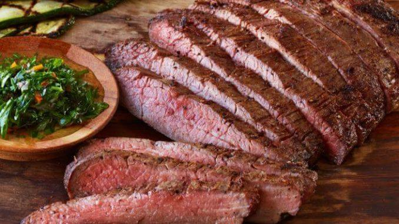

Vacio Prime

Vacio prime is a special cut of meat from the cow typical in
Argentina. The cut is famed for its juicyness and its tenderness
without requiring very much in terms of sauce or seasoning to
be delicious, making it a great choice for at home preparation.
Ingredients
- Cut of Vacio Prime
- MDos Anclas Grill Salt
- Charcoal Grill
Steps to Follow
- Fire up your charcoal grill.
- While the grill heats up, trim the excess fat off of the slab of Vacio
- Salt one side of the vacio slab
- Place the salted side on the grill over the hottest region of flame
- While the salted side sears, salt the other side of the slab of meat
- Flip once grill lines are seared into steak and salt is brown/orange
- Once the other side is also seared, remove the slab of meat and slice along the lines into thin strips
- Place thin strips back on the grill with one of the red sides down
- Once all strips are down, lightly salt the upward facing side for the last time
- Leave each strip cooking for 2-3 minutes a side max, do not be afraid to cut into strips to check redness
- Plate and serve, optionally with chimichurri but in my opinion let the meat speak for itself